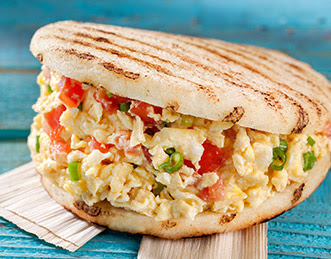

Home
La Perico

Description
"Perico" is the Venezuelan style of scrambled eggs, cooked with tomatoes and onions.
It's the most popular arepa filling for breakfast.
Ingredients
- -Precooked corn flour (e.g., Harina P.A.N.)
- - Warm water
- - Salt
- -Oil (for cooking)
- -Egg
- -Tomatoes
- -Onion
Step by Step
- Meassure the Ingredients
- Mix the Dough
- Knead and Rest
- Shape the Arepas
- Coon on Skillet
- Bake for Fluffiness(Optional)
- Slice and Fill